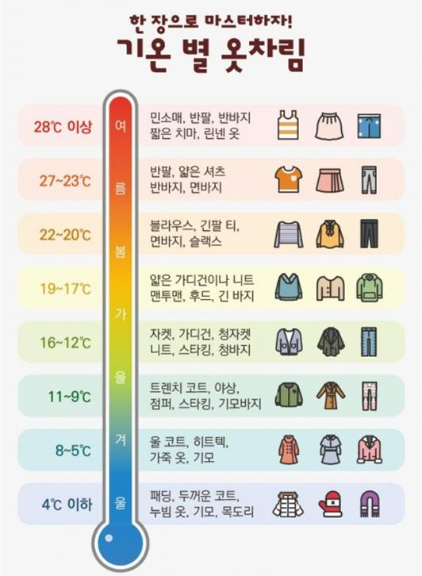

날씨 느낌
빠른 날씨 정보
복장 권고
비슷한 날씨
한국 기상청
Accu Weather
Open Weatr
빠른 날씨 정보
복장 권고
위로가기

비슷한 날씨
위로가기
[ 한국 기상청: 단기예보 ]
위로가기
[ Accu weather: 한국날씨 ]
위로가기
[ Open weather: 날씨검색 ]
위로가기
(광고) 이창현 코딩연구소.... 좋은 교육, 좋은 교재, 좋은 프로그래머!:
연락처: (전화)000 - 0000 - 0000, (메일)IamEmail@email.com